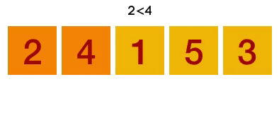

Overview
Bubble sort is one of the fundamental forms of sorting in programming. Bubble sort
algorithms move through a sequence of data (typically integers) and rearrange them into
ascending or descending order one number at a time.
The algorithm compares
number X to the adjacent number Y. If X is higher than Y, the two are swapped and the
algorithm starts over.This process repeats until they are not in the intended order.

It is called bubble sort because the movement of array elements is just like the movement of air bubbles in the water. Bubbles in water rise up to the surface; similarly, the array elements in bubble sort move to the end in each iteration.
This sorting algorithm is comparison-based algorithm.